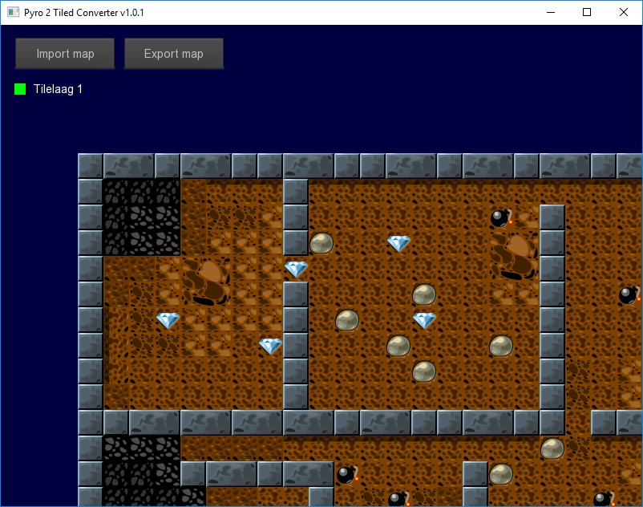

The Pyro 2 Tiled Converter
The Pyro 2 Tiled Converter is a tool that converts Tiled project files to a format that the Pyro 2 scene loader can understand.
To use the Pyro 2 Tiled Converter you must first build it with Monkey 2 and Pyro 2 ( always check for the latest version ).
To import a Tiled map
1. To import a Tiled map click on the Load map button.
2. Choose a Tiled map projct file ( .tmx ) and open it.
Now if everything went well the tiled map should appear in the window

The
layer check boxes can be used to check if each layer is loaded
correctly but it can not be used to control what levels are exported (
yet ).
To export the Tiled map
1. To export a Tiled map click on the Export map button.
2. Choose a target directory and a filename and save the map.
It's
mandatory to use a separate directory for each export if you use
different tilesets for each Tiled map but not when your Tiled maps
share exactly the same tilesets! Just the file names need to be
different. The Tiled Map Converter will warn you if a target export
directory is not empty and will prompt you to overwrite existing
files or not. Tilesets can be safely overwritten when Tiled maps share
exactly the same tilesets. This is designed to handle resources
efficiently.
Known limitations
-
Avoid duplicate filenames in your Tiled map projects even when they are
in different directories. The Pyro 2 Tiled Converter can not handle
them right now.
- All kinds of compression must be turned off in your Tiled map projects.
Example
Have a look at example.monkey2 for a demonstration on how to use the exported data..